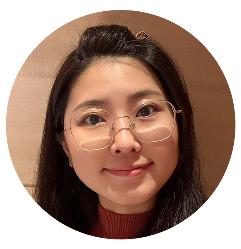

Hi! I'm Sylvia
也可以叫我圓圓，個性大方開朗，
熱於學習新事物且富有上進心，
我勇於接受新挑戰，敢於行動且有毅力，
喜歡任何關於美的事物。
最喜歡的一句話：The best way to escape from a problem, is to solve it.
關於我
我在設計領域已有超過10年經驗，無論是平面設計、電商BN、包裝印刷、型錄排版，皆有設計經驗且能獨立執行，歷經不同公司的工作經驗下，亦有管理能力，擅長團隊合作、溝通協調能力強，過往皆曾擔任Leader或PM角色，不僅能獨立完成工作項目、與客戶維持良好關係，亦能管理團隊依照專案時程進度完成工作，並精準達到目標。
設計專業 邏輯思考 電商思維 創意行銷 專案管理 CSS/HTML PS/AI/PR/AE
設計專業 邏輯思考 電商思維 創意行銷 專案管理 CSS/HTML PS/AI/PR/AE
工作經歷
- 2020/05 - 2024/08
極品生活電商 (祥和蔬食/愛悠椅) - 2016/12 - 2020/04
DESENO笛森諾精品旅行箱 - 2015/03 - 2016/10
葉綠宿創意旅店 - 2012/08 - 2014/12
皮可米寶寶攝影
教育學歷
- 2008/08 - 2012/06
國立臺中科技大學 多媒體設計系 畢籌會會長/志工社社長 - 2006/08 - 2008/06
國立豐原高級中學
作品集